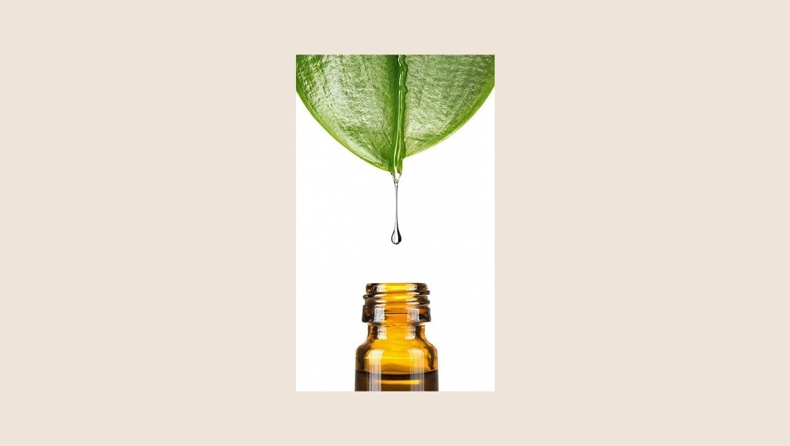

¿Conoces las tinturas madre? ¿Sabías que las podés hacer vos mismx? En Bindi te contamos cómo.
Las tinturas madre son medicinas naturales, ya que consisten en conservar los principios activos de las plantas. Se trata de un extracto concentrado de planta medicinal, y su preparación es muy sencilla.
En primer lugar hay que elegir la planta que deseamos convertir en tintura madre. Para esto lo ideal es investigar sobre las distintas propiedades de cada una y ver qué es lo que necesitamos. No olvides que las plantas sirven tanto en la cura de enfermedades como en la prevención, y además trabajan en diversos niveles de energía. Una vez seleccionada la planta, se coloca la hierba en un frasco de 350 ml aproximadamente (tipo de mermelada), de manera que sobre un 30% vacío.
El próximo paso consiste en hidratar la planta con un poco de agua, y luego directamente rellenamos todo el frasco con alcohol. La función del alcohol es hacer de solvente para captar las propiedades de la hierba y extraerlas, para luego adquirirlas nosotrxs.
También existen otros solventes como el vinagre, la glicerina o incluso el agua, pero el alcohol suele ser el más efectivo. Una vez terminada la solución, hay que dejarla en un lugar oscuro y fresco, y agitarla diariamente para que libere sus principios activos. El macerado dura 28 días, cuando se cumple este ciclo se cuela la mezcla, y podes pasarla a un gotero para usarla.
Al hacer unx mismx el preparado puede agregarle piedras o distintas intenciones para potenciar la medicina energéticamente, mismo si lo estamos haciendo para un ser querido. El poder curativo de las plantas es muy fuerte, y también el de nuestra vibración, y esta es una manera de usarlos para ayudarnos.
El mundo de las hierbas es una farmacia natural en la que podemos encontrar grandes remedios para todo tipo de necesidades. La tintura madre se toma de a gotas, y esto varía para cada unx. No olvides poner una etiqueta con el nombre de la planta y su fecha de vencimiento. Suelen durar 2 años aproximadamente.
Y listo, ya tenes todas las herramientas para fabricar tu propia medicina basada en hierbas, ¿qué estás esperando?